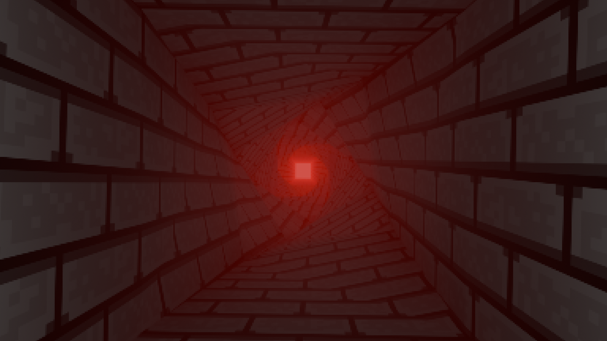
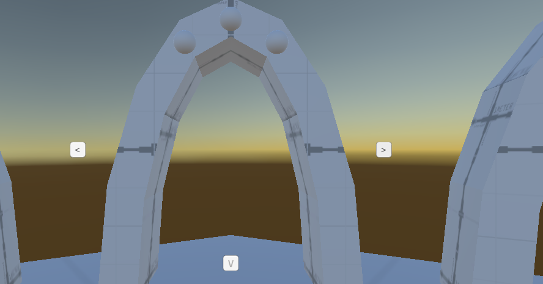

Failure
Change, thing's always change. And this year as been nothing but change, switch from pulverizer to a failed FPS, to several other projects. Now I'm in a position in my personal life where I can't spend all my time programming. Something needs to happen and more importantly, I need to properly scale my games so I don't underestimate how much time it takes. So I returned to a project I had on my mind for awhile, A wave-based FPS meant for 7DFPS. Three difficultys for eight or so hard levels. In order to beat the game you gotta beat the level in all 3 difficulties like a old platform collectathon. Unfortunely the final product for 7D gamejam is extremely unfinished and as tons of bugs. I immediately layed out the groundworks I learned from warped horizons, such as proper controller support and json setting's. Due to the fact that the same system is just a collection of items you gain from each level, saving as a concept is simple. You can delete your current progress, otherwise it loads on start. Warped horizons and Empire of dirt taught me the complicated issue of being dependent on the structure of the engine. Once I finished basic controller support and a UI input handler. I worked on something called a "Bootstrapper" which is a script that's in a persistent scene and starts when the game executes, it creates the data and managers accross scenes such as the setting's. Before starting a loading scene and destroying itself. This is also the first time I used a async scene loader that actually as a progress bar. Soon I worked on the main menu

The main arena of the game all take place on islands, so for the menu there's a tree in the center and the buttons sent you into neighbouring islands for credits and level select.
By this point I was working on small bits for one hour or less so progress was miminal, I did create a cool level select screen where you switch between portals, select the difficulty and enter it. Next month i'm gonna have to add functionality to levels and fix the combat bugs, mainly movement